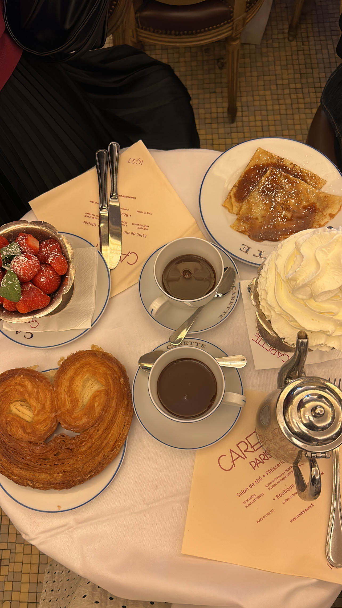

Reading
I love getting lost in a interesting book. My favorite genres include romance, mystery, and urban fiction. Reading allows me to explore new worlds, use my imagination, meet unforgettable characters, and honestly gain new perspectives on life.
Spending Time with Loved Ones
Spending quality time with friends and family is one of my greatest joys. I always say this but I feel like laughing with your friends or family has to be one of life's greatest joys. It's sucha blissful and freeing feeling. Even simple hangouts, these moments create lasting memories. I cherish the traditions we’ve built together and the laughter that fill the gatherings.
Boba & Matcha
I loveee boba tea and matcha drinks. My favorite flavors include taro, dirty brown sugar milk tea, and matcha latte. I love exploring different boba shops and trying new drink combinations.
Check out Gong Cha's menu and see if you’ll be interested in trying a drink!
My Experiences
Travel
Recently, I traveled to Paris, and it was an unforgettable experience. I loved strolling along Champ Elysses, going to Disneyland paris, exploring famous cafes and delicious restuarants, and visiting the arc and other landmarks. My favorite moment was honestly the vibes my friends and I shared throughout the trip. I feel like it has grew all of our bonds.
Professional Growth
I’m currently an intern at a consulting business, and it has been a great learning experience. I’m gaining hands-on skills in strategy, client communication, and problem-solving. Every day brings new insight, and I’m excited to see where this journey takes me.